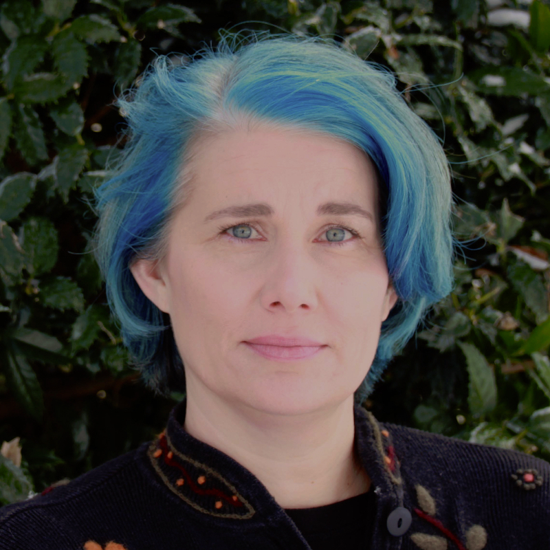

About Me
Hello, I'm Mary.
I like working on all kinds of projects and learning new things all the time. Some of the things I have learned on my own or by taking classes in the last several years are yoga, knitting, PMI CAPM certification, Swedish, state licensure as a Literacy Specialist and a bunch of other stuff. This is my first portfolio for myself. I have made a practice portfolio for Catwoala, an imaginary character created by my daughter. You can see it in my portfolio.
It's a work in progress.